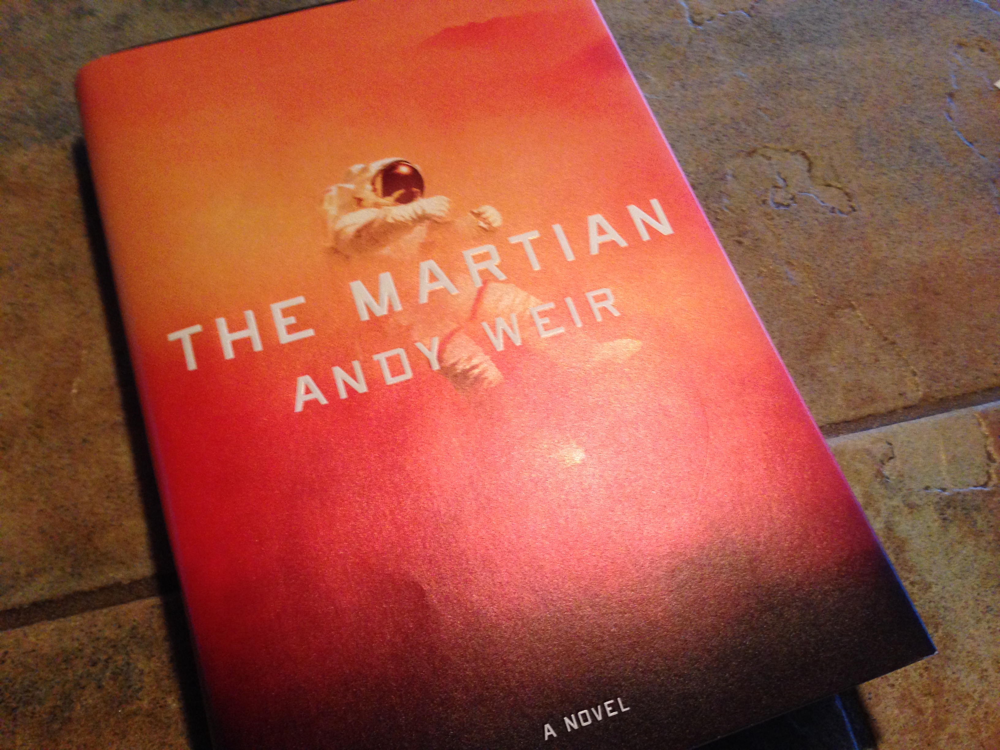

For my 5th and final exploration, I read and then watched The Martian (2h 31m). First, I read the book, published in 2011. I found it interesting that the author, Andy Weir, originally published it one chapter at a time on his website. I enjoyed reading it so much I decided to watch the movie. It was one of my favorite sci-fi movies. It was very well done, with a main theme the stark contrast between the high-tech Hab, ships, and Earth and the wild environment of Mars that Mark Watney (Matt Damon) needed to survive. I also liked the scenes where Watney talked directly to the cameras, which made up the majority of the book. The book acted mostly as Watney’s journal, with other chapters added in about what was going on at NASA and with his crew.
